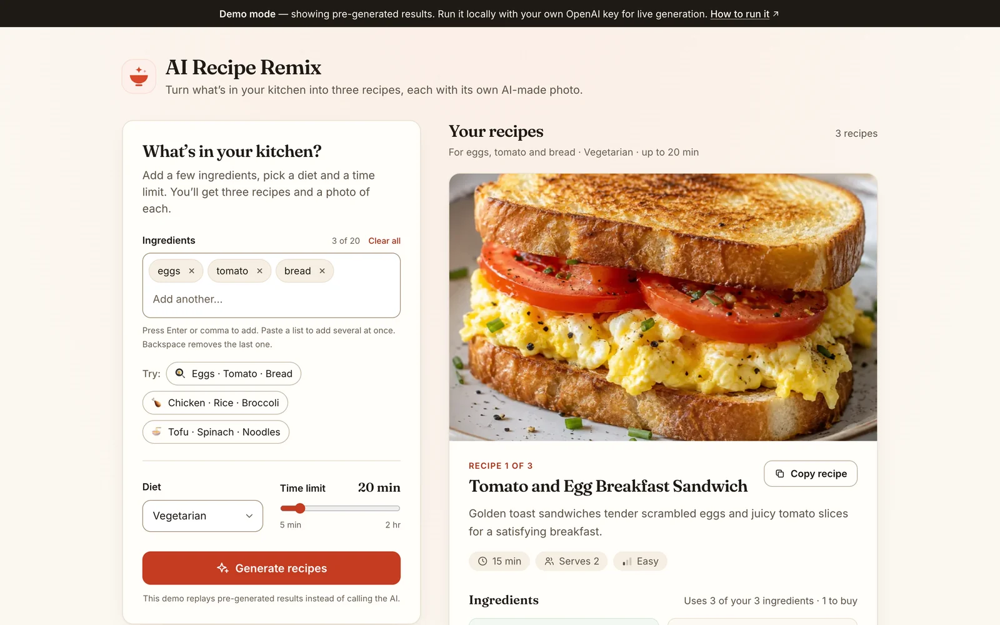
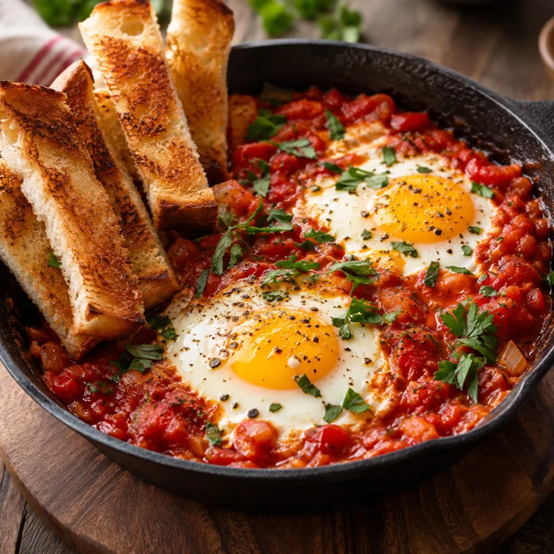
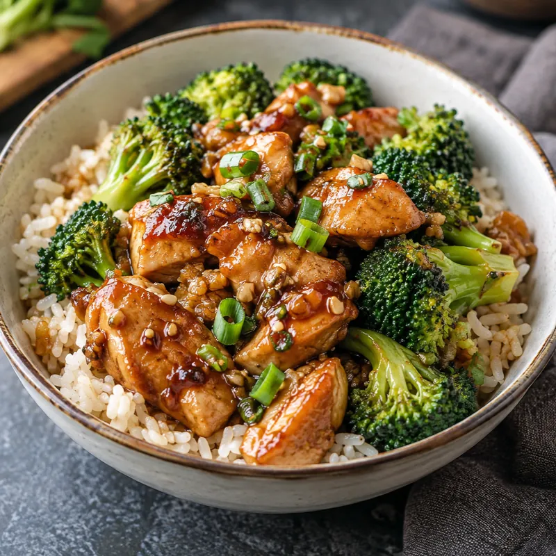

03 · Full-stack web · CPS 3500 · February 2026
AI Recipe Remix
A web app that turns whatever is in your kitchen into three recipes, each with a photo of the finished dish. React and Tailwind on the front end; a small Express server talks to OpenAI, so the API key never reaches the browser.
- Role
- Solo: front end, back end, prompts. The 2026 redesign was built with AI coding tools.
- Timeline
- February 2026
- Context
- CPS 3500 Project 1, Kean University
- Built with
- React, Vite, Tailwind CSS, Express, OpenAI API

The idea
Most recipe sites start from a dish. This one starts from your fridge. Type the ingredients you have, choose a diet (vegetarian, vegan, halal or gluten-free) and a time limit, and the app suggests three realistic recipes that use as much of what you have as possible, with quantities, steps, substitutions, allergens and tips.


Dishes from the demo, generated in October 2026 by OpenAI models from the app’s own prompts (not by a live run of the app).
How it works
The design is from Xinyue (Lily) Feng’s original: two requests, kept apart on purpose. Recipe text comes back in a few seconds and photos take longer, so the cards appear as soon as the recipes arrive and the photos follow. Since 2026, each photo also fades in on its own as soon as it is ready.
Browser (React) Express server OpenAI
─────────────── ────────────── ──────
ingredients, diet, time ── POST /api/recipes
validate input ─────────── text model + JSON schema
◀──────────────────────────── 3 recipes as JSON
show three recipe cards ◀──
for each recipe:
dish description ────── POST /api/image ────────── image model
◀──────────────────────────── image
photo fades into its card ◀──- Structured output. The server asks the model for JSON in a fixed shape (title, time, servings, ingredients, steps…), so the interface never has to guess its way through prose. The original spelled the shape out in the prompt; since 2026 the server enforces it with a strict JSON schema.
- The key stays private. The browser only ever talks to the Express server, which holds the OpenAI key in an environment variable.
- Food-photo prompts. Each image request asks for a single plated dish with realistic lighting and no text, written from the recipe’s own title and summary.
The public demo
Putting a paid API key on the open web would invite abuse, so the demo on this site runs without one. It replays pre-generated results for three sample kitchens, in exactly the format the server returns and with similar pauses. Enter different ingredients and it shows the closest sample and says so. To generate new recipes live, run the project locally with your own key; the README explains how.
Portfolio edition · 2026
The app was revisited for this portfolio with AI coding tools. The idea, stack and API design stayed the same; the rest was tightened:
- Interface. A new design; ingredients entered as removable chips; a time slider instead of a number box; plain-language errors with a retry button; better accessibility (labels, focus styles, status announcements, WCAG AA contrast).
- “In your kitchen” vs. “To buy.” Each card compares its ingredient list with what you entered; pantry staples like salt and pepper are listed separately.
- Tips. The original prompt asked for cooking tips, but the page never showed them; now it does.
- Photos load independently. The original waited for all three images at once, so one slow image held up the rest and one failed image hid all three.
- A safer server. Input validation, per-visitor rate limits, an allow-list of origins, JSON-schema output and error messages that don’t leak internals.
- Tests. Automated tests for both halves: ingredient parsing and matching, demo playback, input validation, CORS, rate limits and every API endpoint, run against a fake OpenAI client so no key is needed.